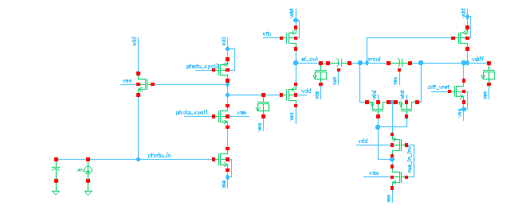
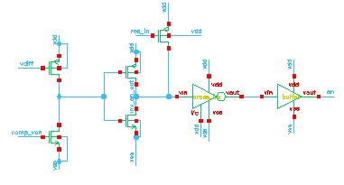
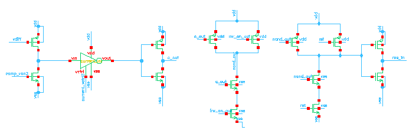
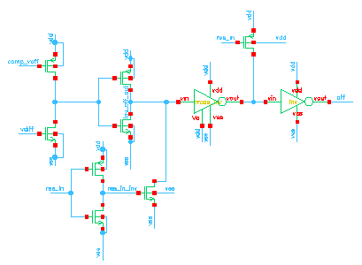
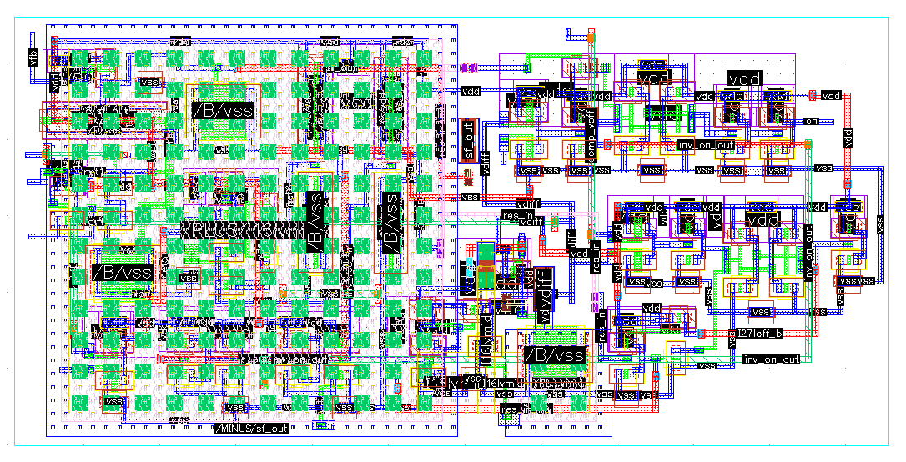
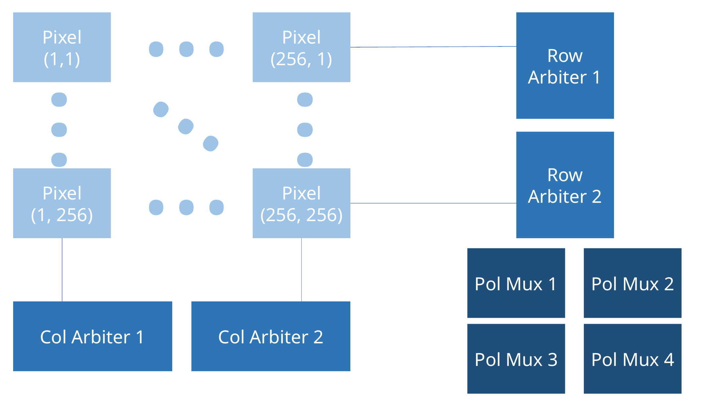

Analog circuit design · 45-nm CMOS · Cadence Virtuoso
Designed a low-power 45-nm CMOS dynamic vision sensor (DVS) pixel, targeting low noise, a low contrast threshold, and in-pixel event storage. Developed a dedicated circuit block to suppress charge injection and unintended pixel behavior.
What is a DVS pixel?
A DVS pixel detects changes in light intensity and represents them as ON/OFF events. A logarithmic photoreceptor and differencing circuit sense relative changes, while comparators determine when to generate an event. This event-driven approach can reduce redundant sensing and data transfer.
Design goals
The pixel design targeted low-power operation while detecting small photocurrent changes and rejecting noise and leakage-driven false events.
| Parameter | Design target |
|---|---|
| Supply voltage, VDD | 1 V |
| Clock frequency | 300 MHz |
| Noise-frequency tolerance | Up to 100 kHz |
| Relative photocurrent change | 20% |
Circuit design
The pixel combines a photoreceptor and differencing stage with ON/OFF comparators, periodic reset, and local event storage. To suppress brief noise or leakage transients, I added a lower-threshold comparator and a delayed check generated by a current-starved inverter. If the main ON threshold is not reached before the delay expires, reset logic clears the transient event.
The 20% sensitivity target used a 100 pA to 120 pA photocurrent step as its reference case.
Final pixel circuit
The final schematic is organized into the photoreceptor/differencing stage, reset logic, and separate ON and OFF event paths.


Enlarge image ⤢

Enlarge image ⤢

Enlarge image ⤢

Enlarge image ⤢Pixel layout
The presentation lists the pixel dimensions as 11.48 × 5.61 μm.


Enlarge image ⤢Address-event readout
The array-level AER design uses a handshaking readout concept for a 256 × 256 pixel array. Row and column arbiters select the event address, while polarity multiplexers route ON/OFF information.


Enlarge image ⤢Results
The final design operated from a low supply voltage of 1 V and reduced pixel area by approximately 20% relative to the baseline design. Simulations showed contrast sensitivity of approximately 20% at the 100 pA reference photocurrent, corresponding to a change from 100 pA to 120 pA to trigger an event.
Design references
The following works are references for this project:
- M. Akrarai, N. Margotat, G. Sicard, and L. Fesquet. “A hybrid event-based pixel for low-power image sensing,” ICECS, 2021. DOI.
- B. Son et al. “A 640×480 Dynamic Vision Sensor with a 9μm Pixel and 300Meps Address-Event Representation,” ISSCC, 2017.
- Y. Suh et al. “A 1280×960 Dynamic Vision Sensor with a 4.95-μm Pixel Pitch and Motion Artifact Minimization,” ISCAS, 2020 presentation.